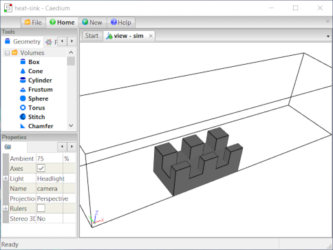
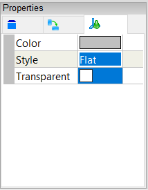
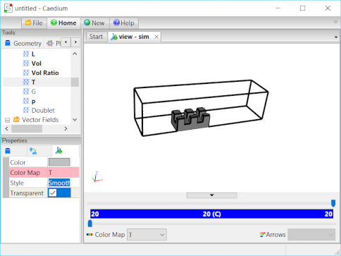

Conjugate Heat Transfer for a Heat Sink
Simulate an incompressible, steady-state, turbulent air flow around a heat sink with Conjugate Heat Transfer (CHT). View velocity vectors and monitor average temperatures.
This tutorial is classed as advanced and you should consider completing other simpler RANS Flow tutorials as a prerequisite, such as "Incompressible Flow Through a Pipe into a Box".
Goals
In this tutorial, you will learn how to:
- Specify fluid and solid conditions on a multiple-volume simulation for an incompressible, steady-state, turbulent air flow simulation using Conjugate Heat Transfer (CHT)
- Specify boundary conditions on faces
- Specify meshing parameters
- Generate velocity vectors
- Create an area-averaged temperature monitor
- Monitor residuals to determine flow simulation convergence
Assumptions
- You have activated the Caedium RANS Flow add-on, or Caedium Professional.
- You are familiar with Caedium essentials.
- You have completed simpler RANS Flow tutorials.
- You have either:
- Launched Caedium with the project file (heat-sink.sym) containing the geometry for this tutorial
- Created the geometry by following the tutorial "Heat Sink"
The geometry within Caedium should appear as shown below.

On the interface between the fluid and solid volumes coincident faces were linked in the geometry creation tutorial using the Faces->Link tool in the Geometry Tool Palette.
Prepare the Volumes
Right-click an edge of the outer boundary (volume_7), double-click volume_7 in the Select dialog and then select Properties from the menu. In the Properties Panel, select the Volume tab and set the Name to flow-volume.
Right-click a shaded face of the heat sink (volume_8), double-click volume_8 in the Select dialog and then select Properties from the menu. In the Properties Panel, select the Volume tab and set the Name to solid-volume.
Specify the Substance Settings
Specify the Conjugate Heat Transfer Conditions
Select the Physics Tool Palette.
Drag and drop the Simulation->Conjugate Heat Transfer tool onto the background of the View Window (view) and select Done.
Specify the Fluid Conditions
Set the State Properties for the Fluid
Drag and drop the Gases->Air tool onto an edge of the flow-volume. Select Done to set air as the fluid inside the flow-volume.
In the Properties Panel under the Volume tab set the following properties in Substance: Air->State: Gas according to:
- Compressible = No (default)
- Heat Transfer = Yes
- Convection = Yes (default)
- Radiation = No (default)
- Rotational = Yes (default)
- Species = No (default)
- Transient = No (default)
- Viscous = Yes (default)

Set the Reference Velocity for the Fluid
The reference velocity can be used to initialize the simulation and to specify the inlet velocity. In this tutorial you will set a reference velocity of 1 m/s in the X-direction.
In the Properties Panel set Substance: Air->Properties->Phase: Single->Reference->U: Fixed Value->Value to be [1 0 0] and press Enter on the keyboard.
Set the Relaxation Factors for the Fluid
Changing the default enthalpy relaxation factor in this example will help the simulation to converge. See "Relaxation Factors in RANS Flow Solvers" for tips on setting relaxation factors.
In the Properties Panel, expand the Substance: Air->Solver: RANS Flow->Relaxation Factors property, and then set h to be 0.8.
Specify the Solid Conditions
Set the State Properties for the Solid
Drag and drop the Solids->Aluminum tool onto a face of the solid-volume. Select Done to set aluminum as the solid inside the solid-volume.
In the Properties Panel under the Volume tab set the following properties in Substance: Aluminum->State: Solid according to:
- Heat Transfer = Yes
- Conduction = Yes (default)
- Radiation = No (default)
Set the Relaxation Factors for the Solid
In the Properties Panel, expand the Substance: Aluminum->Solver: RANS Flow->Relaxation Factors property, and then set h to be 1.
Specify the Boundary Conditions
Walls
Drag and drop the Faces->Wall tool onto the View Window background. Double-click sim->Faces in the Select dialog and select Done to create walls on all the outer surfaces of both volumes.
A wall is a solid surface through which fluid cannot flow.
Inlet and Outlet
To create an inlet, drag and drop the Faces->Inlet tool onto the face shown below in blue. Select that face in the Select dialog, click OK, and then select Done to create the inlet.
An inlet is a boundary condition that specifies the properties of the fluid as it enters the flow volume.
To create an outlet, drag and drop the Faces->Outlet tool onto the face shown above in green. Select that face in the Select dialog, click OK, and then select Done to create the outlet.
An outlet is a boundary condition that specifies the properties of the fluid as it leaves the flow volume.
Local Symmetry
To create the two symmetry conditions, drag and drop the Faces->Symmetry Local tool onto one of the symmetry faces shown below. Double-click the first face in the Select dialog. Then select Select/Deselect and right-click on the second face (shown below), double-click the first face in the Select dialog and select Done.
The Symmetry Local tool can be applied to any planar face. The Symmetry tool applies to the entire simulation and is useful for visualization.
Coupled Walls
Select the Results Tool Palette.
Drag and drop the Selection Filters->Linked tool on to an edge of the flow-volume. Double-click flow-volume->Faces in the Select dialog and select Done to select all the linked faces within the flow-volume. Hold the ctrl-key and right-click on the View Window (view). Double-click sim in the Select dialog, select Group and then select Properties to create a group of all the flow-volume linked faces.
In the Properties Panel, select the Group tab  and set the Name to flow-walls.
and set the Name to flow-walls.
In the Properties Panel, set Physics: Wall->Type: Default->T (temperature) to Coupled.
Using the same procedure we will now set up the coupled walls for the solid-volume.
Drag and drop the Selection Filters->Linked tool on to a shaded face of the solid-volume. Double-click solid-volume->Faces in the Select dialog and select Done to select all the linked faces within the solid-volume. Hold the ctrl-key and right-click on the View Window (view). Double-click sim in the Select dialog, select Group and then select Properties to create a group of all the solid-volume linked faces.
In the Properties Panel, select the Group tab and set the Name to solid-walls.
In the Properties Panel, set Physics: Wall->Type: Default->T to Coupled.
Heated External Solid Wall
To set the heat flux on the base of the heat sink, right-click the heat sink base (shown above in red), double-click the first face in the Select dialog and select Properties. In the Properties Panel select the Face tab  , set Physics: Wall->Type: Default->T to External Heat Flux, then set T: External Heat Flux->q to 10000.
, set Physics: Wall->Type: Default->T to External Heat Flux, then set T: External Heat Flux->q to 10000.
Specify Meshing Parameters
Accuracy Tool
The accuracy property controls the mesh element size and growth rate on and around the entities associated with each accuracy property.
Select the Physics Tool Palette.
Select the Special->Accuracy tool. In the Properties Panel set Accuracy to Custom, and set Max Element Size to 0.001.
Drag and drop the Special->Accuracy tool onto an edge of the heat sink. Double-click the flow-walls group in the Select dialog, and select Done to set the accuracy for the group.
Volume Mesh
To see individual volume mesh elements after the volume meshing process is complete, right-click in the View Window background, double-click sim->Volumes, and select Properties from the menu. In the Properties Panel, turn off the Transparent property and set Style to Flat.

Select the Results Tool Palette.
With the volumes still selected from the previous operation double-click the Scalar Fields->Vol Ratio (volume ratio = actual volume/ideal volume) and select Color Map.
The request for the Vol Ratio color map will cause the entire simulation to be meshed which will take a few seconds.
Drag the upper threshold slider to the left in the View Legend to examine the cells with the lowest quality (lowest value in the blue range).
If you were to see clusters of low quality cells attached to the geometry then that is a sign that you need to improve the mesh in that region using the Accuracy tool. Fortunately this mesh does not suffer from low quality element clusters and you can proceed on with the simulation.
Visualize Flow Results
To show iso-surfaces of temperature in the flow-volume, drag and drop Scalar Fields->T (temperature) in the Results Tool Palette onto a face of the flow-volume. Double click flow-volume in the Select dialog and select Color Map. In the Properties Panel, turn on the Transparent property and set Style to Smooth.

To show velocity vectors colored by temperature on the flow-volume symmetry face, drag and drop the Vector Fields->U (velocity) tool onto an edge of the flow-volume symmetry face. Double click face_94 in the Select dialog and select Arrows. In the Results Tool Palette double-click Scalar Fields->T and select Color Map.
Left-click in the View Window. In the Properties Panel, turn off the Transparent property to make the arrows solid.
In the View Legend, left-click on the title Arrows  . In the Properties Panel set Scale to 0.01.
. In the Properties Panel set Scale to 0.01.
Create Residuals Monitors
Conjugate heat transfer requires each fluid and solid volume to have dedicated equation solvers. Therefore, each volume will have specific residuals to monitor. In this case there are two volumes, so we need to create a residuals monitor for each.
Drag and drop the Special->Residuals tool onto the View Window background. Double-click sim->Volumes in the Select dialog and select Monitor to create the two residuals monitors.
Drag and drop each Residuals Monitor tab over to the right-hand edge of the Caedium application window to split the window into three parts as shown below.
Create Area Averaged (Weighted) Temperature Result
Select the New Toolbar and click the Result button  .
.
In the Create Result dialog, select the Binary tab. Verify that Multiply is selected from the list.
In the Results Tool Palette drag and drop Scalar Fields->T onto the left-hand target in the Create Result dialog. Drag and drop Scalar Fields->A (area) onto the right-hand target in the Create Result dialog.
Click Create to create the scalar field (T x A).
In the Create Result dialog, select the Unary tab. Verify that Sum is selected from the list.
In the Results Tool Palette drag and drop Scalar Fields->(T x A) onto the target in the Create Result dialog.
Click Create to create the scalar variable Sum((T x A)).
In the Results Tool Palette drag and drop Scalar Fields->A onto the target in the Create Result dialog. Click Create to create the scalar variable Sum(A).
In the Create Result dialog, select the Binary tab. Select Divide from the list.
In the Results Tool Palette drag and drop Scalar Variables->Sum((T x A)) onto the left-hand target in the Create Result dialog. Drag and drop Scalar Variables->Sum(A) onto the right-hand target in the Create Result dialog.
Click Create to create the scalar variable (Sum((T x A)) / Sum(A)).
Close the Create Result dialog.
In the Results Tool Palette, select Scalar Variables->(Sum((T x A)) / Sum(A)) rename it Tave, and press Enter on the keyboard.
In the Results Tool Palette, left-click Scalar Variables->(Sum((T x A)) / Sum(A)), left-click again to edit the title, change it to Tave (Temperature Average), and press Enter on the keyboard.
Drag and drop the Scalar Variables->Tave tool onto the View Window background. Double-click the sim->Groups->flow-walls in the Select dialog and select Monitor.
Drag and drop the Tave Monitor tab over to the right-hand edge of the Caedium application window to split the window into four parts as shown below.
Left-click flow-walls in the Tave Monitor Legend. In the Properties Panel, set the Symbol to None.
In the View Window right-click on a edge of the outlet, double-click the outlet (face_99) in the Select dialog, and select Copy. Left-click in the Tave Monitor Window to give it focus, then right-click and select Paste. In the Select Substance dialog double-click flow-volume.
Left-click face_99 in the Tave Monitor Legend, left-click again to edit the title, change it to outlet, and press Enter on the keyboard. In the Properties Panel, set the Symbol to None.
Run the Flow Solver
The number of flow (simulation) solver iterations is determined by multiplying the number of simulation time-steps (default = 5) by the number of iterations per simulation time-step (default = 100). After each simulation time-step (equivalent to 100 iterations by default) the results will be refreshed.
For this simulation you will increase the number of simulation time-steps to 20, for a total of 2000 iterations.
Right-click on the View Window background, double-click sim, and then select Properties from the menu. Select the Simulation tab  in the Properties Panel. Set Time->Duration to 20 and press Enter on the keyboard.
in the Properties Panel. Set Time->Duration to 20 and press Enter on the keyboard.
In the Home Toolbar click the Run button  to run the flow solver.
to run the flow solver.
If you wanted to interrupt the flow solver, you would re-click the Run button; the solver would then stop at the end of the current simulation time-step.
Let the solver complete its run. Note the updates of the Temperature contours, the Tave monitor, and the residuals monitors as the simulation progresses.
Feedback
Questions? Ideas? Problems?